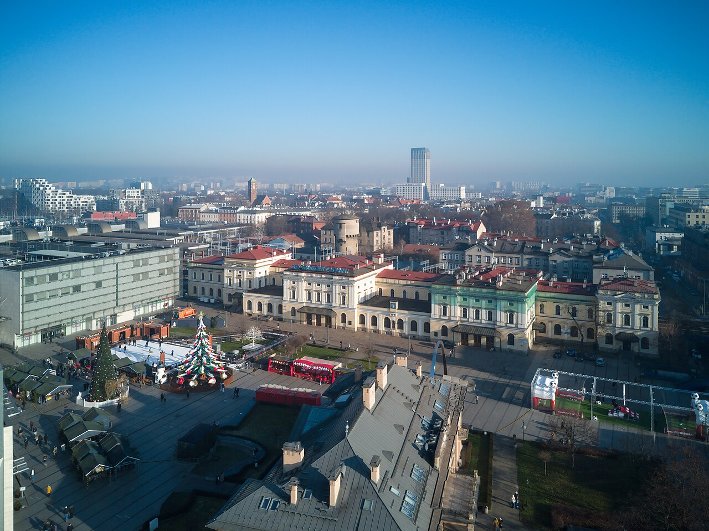

출발 · 0:00
크라쿠프 중앙역
Kraków Główny
1847년 개관한 폴란드의 가장 오래된 주요 역 중 하나. 19세기 부분과 2014년 개축된 현대 부분이 한 자리에 공존한다. 바르샤바·자코파네·아우슈비츠(오시비엥침) 등 모든 방향의 폴란드 도시 기차가 여기서 출발/도착한다.
역 광장의 이름이 흥미롭다 — plac Jana Nowaka-Jeziorańskiego. 2회차에서 본 폴란드 국내군의 한 전령(kurier) 얀 노박-예지오란스키의 이름이다. 첫 정거장에서부터 이 도시가 폴란드 역사와 어떻게 얽혀 있는지가 시작된다.